- The dynamic radar cruise control system is operating.
- Curve speed reduction control is turned "High", " Middle" or "Low" via customized settings.
- Acceleration via operation of the accelerator pedal is not detected.
- There is a curve which may require a lower vehicle speed.
- Based on information from the sensors, it is judged that speed limiting is required.
| Last Modified: 10-07-2025 | 6.11:8.1.0 | Doc ID: NM100000002GLSX |
| Model Year Start: 2024 | Model: Tacoma | Prod Date Range: [12/2023 - ] |
| Title: ADVANCED DRIVER ASSISTANCE SYSTEM: DYNAMIC RADAR CRUISE CONTROL SYSTEM: DYNAMIC RADAR CRUISE CONTROL; 2024 - 2026 MY Tacoma Tacoma HV [12/2023 - ] | ||
DYNAMIC RADAR CRUISE CONTROL
FUNCTION
(a) In adaptive cruise mode, the following illustrations are examples showing control when the vehicle is being driven at 100 km/h (62 mph) following the preceding vehicle being driven at 80 km/h (50 mph), and then stops and starts in accordance with the status of the vehicle ahead.
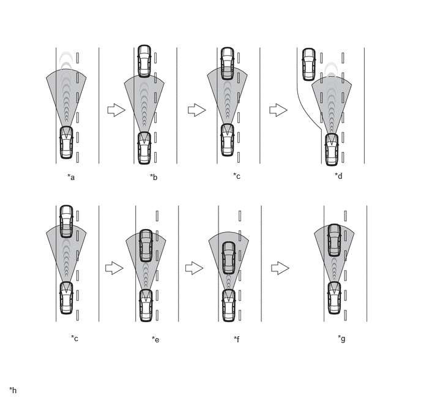|
*a |
Constant Speed Control [100 km/h (62 mph)] |
*b |
Deceleration Control [From 100 km/h (62 mph) to 80 km/h (50 mph)] |
|
*c |
Follow-up Control [80 km/h (50 mph)] |
*d |
Acceleration Control [From 80 km/h (50 mph) to 100 km/h (62 mph)] |
|
*e |
Stop Control [From 80 km/h (50 mph) to 0 km/h (0 mph)] (Full speed range function) |
*f |
Stop Retention Control [0 km/h (0 mph)] (Full speed range function) |
|
*g |
Start Control (Start-off Operation and Follow-up Control) (Full speed range function) |
*h |
The illustration is an example. |
|
*a |
Turn Signal-linked Control |
*b |
Follow-up Control |
|
*c |
From 80 km/h (50 mph) to Preliminary Acceleration |
*d |
From Preliminary Acceleration to 100 km/h (62 mph) |
|
*e |
Detecting Adjacent Vehicle. [100 km/h (62 mph)] |
*f |
Turn Signal Operation → Start to Deceleration |
|
*g |
Continue to Deceleration while Changing Lane→Follow-up Control [80 km/h (50 mph)] |
*h |
The illustration is an example. |
(b) Curve Speed Reduction Control
(1) Operating Conditions
- Operating Conditions of Curve Speed Reduction
Control
(2) Operation Timing
- When the system determines that it is necessary
to restrain the vehicle speed according to
information from the sensors while driving in
adaptive cruise mode, displays on the headup display*
and multi-information display are used to inform the
driver that the curve speed reduction control
function is operating.
- *: Models with headup display
- When control performed by the curve speed
reduction control function completes, the display
turns off and the vehicle returns to the set speed of
the radar cruise control system according to the
conditions. 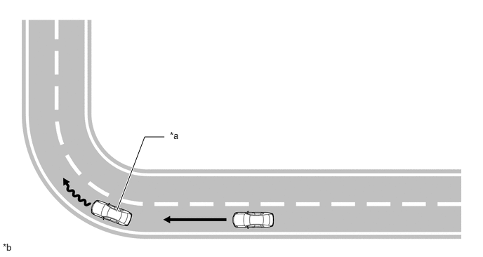
*a
Starts Decelerating based on Information from Sensors
*b
The illustration is an example.
Condition
Multi-information Display*
Indicator
*: The illustration is an example. Curve Speed Reduction Control
- When the curve speed reduction control is set to "High", " Middle"or "Low"
- Vehicle Ahead, Long (Blue).
- While driving at a set speed of 100 km/h (62 mph)(Green).
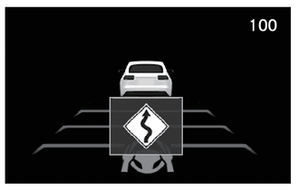 Illuminates (Green)
(c) Excessive Speed Warning
(1) If the vehicle has exceeded the set vehicle speed in the following conditions, the display of the set vehicle speed is inverted.
- When driving on a downhill slope
Condition
Multi-information Display*
Indicator
*: The illustration is an example. When an excessive speed warning is issued.
While driving at a set speed of 100 km/h (62 mph).
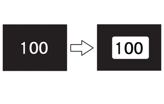 Illuminates (Green)
(d) Cruise Control Operation Switch
(1) The operation switches of the dynamic radar cruise control system (driving assist switch (cruise control switch), driving assist mode select switch, RES switch (+Switch), -Switch, CANCEL switch and vehicle-to-vehicle distance control switch) are positioned in the steering pad switch assembly.
|
Component |
Function |
|---|---|
|
Driving Assist Switch (Cruise Control Switch) |
|
|
Driving Assist Mode Select Switch |
Switches between adaptive cruise mode and cruise control mode. |
|
RES Switch (+Switch) |
Performs accelerator control, tap-up control and resume control. |
|
-Switch |
Performs coast control and tap-down control. |
|
CANCEL Switch |
Cancel control. |
|
Vehicle-to-vehicle Distance Control Switch |
Switches between the vehicle-to-vehicle distance settings. |
|
*1 |
Driving Assist Switch (Cruise Control Switch) |
*2 |
RES Switch (+Switch) |
|
*3 |
CANCEL Switch |
*4 |
-Switch |
|
*5 |
Driving Assist Mode Select Switch |
*6 |
Vehicle-to-vehicle Distance Control Switch |
(2) Vehicle-to-vehicle Distance Control Switch
- While the vehicle is being driven in adaptive cruise mode, the vehicle-to-vehicle distance setting can be changed as follows each time the vehicle-to-vehicle distance control switch is pressed; extra long → long → middle → short → extra long.
- The vehicle-to-vehicle distance is as follows:
Mode
Vehicle-to-vehicle Distance*
*: While driving at a speed of 100 km/h (62 mph). Extra Long
Approximately 60 m (200 ft.)
Long
Approximately 45 m (145 ft.)
Middle
Approximately 30 m (100 ft.)
Short
Approximately 25 m (85 ft.)
SYSTEM CONTROL
(a) Controls performed by the cruise control system differ depending on the selected control mode.
|
Adaptive Cruise Mode |
Mode in which the current vehicle lane is detected and judged, and follow the preceding vehicle while maintaining a suitable distance between vehicles. |
|
Cruise Control Mode |
Mode in which the vehicle speed is maintained in accordance with the set vehicle speed. |
(1) Adaptive Cruise Mode
- Adaptive cruise mode performs the following
control.
Function
Outline
*1: Models with automatic transmission *2: Models with manual transmission
*3: Except full range function
Acceleration Control
- When the + switch is pressed and held, the set vehicle speed increases in approximately 1km/h (0.6mph) or 1mph (1.6km/h) steps.
- If the +switch is tapped, the set vehicle speed increments by approximately 1 km/h (0.6 mph) or 1 mph (1.6 km/h) each for every operation of the switch (tap up function).
- When the vehicle accelerates due to depression of the accelerator pedal and the +switch is tapped when vehicle speed is more than set vehicle speed, the set vehicle speed is set to the vehicle speed when the +switch was tapped.
Deceleration Control
- When the - switch is pressed and held, the set vehicle speed decreases in approximately 1km/h (0.6mph) or 1mph (1.6km/h) steps.
- If the -switch is tapped, the set vehicle speed decrements by approximately 1 km/h (0.6 mph) or 1 mph (1.6 km/h) for every operation of the switch (tap down function).
Turn signal-linked Control
- When in follow-up cruise control mode, the vehicle speed is 80 km/h (50 mph) or more and the vehicle is to change to the overtaking lane, preliminary acceleration is performed when the turn signal switch is operated, and the vehicle slowly accelerates to the set vehicle speed after changing lanes.
- When the vehicle is being driven at a speed of approximately 80 km/h (50 mph) or more and the speed of the vehicle in the adjacent lane is less than that of the vehicle, the vehicle starts preliminary deceleration when the turn signal switch is operated and overtaking follow-up control starts after the vehicle has changed lanes.
Manual Cancel Control
When the following signals are received, control is canceled and the set vehicle speed is maintained.
- Stop light switch assembly is turned on other than under stop retention control (brake pedal is depressed).
- Shift position is changed from D to any other position.
- Shift down by paddle shift switch at D. *1
- Clutch start switch assembly is on (depress the clutch pedal for a certain period of time). *2
- When the engine speed becomes high / low. *2
- When 1st gear is selected. *2
- CANCEL switch on signal (CANCEL switch on the steering pad switch assembly is pushed).
- Driving assist switch (cruise control switch) on signal (driving assist switch on the steering pad switch assembly is pushed).
- Electric parking brake is applied (Only during adaptive cruise mode).
Other Cancel Conditions
If any of the following conditions occur during cruise control driving, speed control by the dynamic radar cruise control system is canceled. However, the set speed remains in the memory:
- VSC operates during cruise control driving.
- TRAC operates for a certain period of time during cruise control driving.
- Drive start control operates during cruise control driving.*1
- TRAC is off or VSC is off.
- Pre-collision system operates during cruise control driving.
- Parking support brake system operates during cruise control driving.
- When the vehicle speed is less than 30km/h. *3
If any of the following conditions occur during cruise control driving, speed control by the dynamic radar cruise control system is canceled.
- The driver seat belt is unfastened.
- The driver seat door is opened.
- Stopped for a long time.
- Stopped on a steep slope.
Resume Control
- After manual cancellation control has been performed, control resumes at the set vehicle speed when the RES switch is operated.
- When starting off of the preceding vehicle is displayed on the multi-information display while the vehicle is stopped, by operating the + switch or depressing the accelerator pedal, follow-up cruising control will resume until the vehicle speed reaches the set vehicle speed.
Brake Control
When a large amount of deceleration is required while vehicle-to vehicle distance control mode is controlling vehicle speed, the brake actuator assembly is operated to apply the brakes. The stop lights are illuminated at this time.
Cruise Control Mode Transition
When the Adaptive Cruise Mode is ready, and the driving assist mode select switch is pressed, the system transitions to Cruise Control Mode.
HINT:
- If the preceding vehicle starts off within approximately 3 seconds of the vehicle being stopped by system control, follow-up cruising control will resume.
- If the preceding vehicle starts off within approximately 3 seconds of the vehicle being stopped by system control and the RES switch is pressed, follow-up cruising control will resume.
- When the vehicle is stopped by system control, control will not be canceled even if the brake pedal is depressed.
(2) Cruise Control Mode
- Cruise control mode performs the following
control.
Function
Outline
Set Control
The vehicle speed is stored as a set vehicle speed and control of vehicle speed begins when the driving support switch is pressed while driving at a speed of approximately 30 km/h (20 mph) or more with the cruise control indicator illuminated.
Set Low Speed Limit
The lowest possible set vehicle speed is approximately 30 km/h. The dynamic radar cruise control system cannot be set when the vehicle speed is below the low vehicle speed limit. If the vehicle speed becomes lower than the low vehicle speed limit when the driving support switch is on, dynamic radar cruise control will be automatically canceled.
Low Speed Limit Control
The lowest possible set vehicle speed is approximately 30 km/h. If the vehicle speed becomes lower than the low vehicle speed limit when constant speed control mode is controlling vehicle speed, the set vehicle speed and the dynamic radar cruise control will be automatically canceled.
Constant Speed Control
The current vehicle speed and set vehicle speed are compared and the drive force is controlled so the current vehicle speed is close to the set vehicle speed.
Acceleration Control
- When the + switch is pressed and held, the vehicle speed is increased by controlling the drive force.
- If the + switch is tapped (approximately 0.6 seconds), the set vehicle speed increments by approximately 1 km/h (0.6 mph) or 1 mph (1.6 km/h) for every operation of the switch (tap up function). It is possible to change the set vehicle speed difference via customize settings.However, if the difference between the actualvehicle speed and the set speed is greater than 5 km/h (3 mph), the set speed will not change.
- When the accelerator pedal is depressed, the vehicle is accelerating and the vehicle speed is more than the set vehicle speed, by tapping the + switch, the vehicle speed is set as the set vehicle speed.
Deceleration Control
- When the - switch is pressed and held, the vehicle speed is decreased by controlling the drive force.
- If the - switch is tapped (approximately 0.6 seconds), the set vehicle speed decrements by approximately 1 km/h (0.6 mph) or 1 mph (1.6 km/h) for every operation of the switch (tap down function). It is possible to set the set vehicle speed change amount via customize settings.
Manual Cancel Control
When the following signals are received, control is canceled and the set vehicle speed is maintained.
- Stop light switch assembly is turned on other than under stop retention control (brake pedal is depressed).
- Shift position is changed from D to any other position.
- CANCEL switch on signal (CANCEL switch on the steering pad switch assembly is pushed).
- Driving assist switch (cruise control switch) on signal (driving assist switch on the steering pad switch assembly is pushed).
Other Cancel Conditions
If any of the following conditions occur during cruise control driving, speed control by the dynamic radar cruise control system is canceled. However, the set speed remains in the memory:
- VSC operates during cruise control driving.
- TRAC operates for a certain period of time during cruise control driving.
- TRAC is off or VSC is off.
- Pre-collision system operates during cruise control driving.
Resume Control
After manual cancellation control has been performed, if the vehicle speed is at the low speed limit or more, control resumes at the set vehicle speed when the RES switch is operated. If the vehicle speed becomes lower than the low vehicle speed limit, the set-speed cannot be restored even if the accelerator pedal is depressed to increase the vehicle speed over the low speed limit.
OPERATION
(a) The combination meter assembly (multi-information display) displays the set vehicle speed, vehicle ahead mark, and warning message.
Adaptive Cruise Mode
|
Condition |
Multi-information Display* |
Indicator |
|
|---|---|---|---|
| *: These illustrations are examples. | |||
|
Set Standby |
|
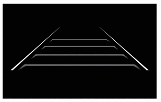 |
Illuminates (White) |
|
Under Constant Speed Control |
|
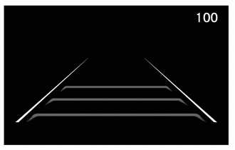 |
Illuminates (Green) |
|
Under Follow-up Control |
|
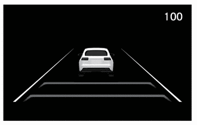 |
Illuminates (Green) |
|
Approach warning |
|
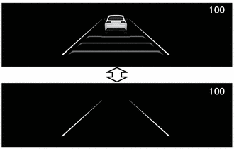 |
Illuminates (Green) |
|
The vehicle-to-vehicle distance mark, vehicle ahead mark blink and the meter buzzer sounds. |
|||
|
Under Follow-up Control/Brake Control |
|
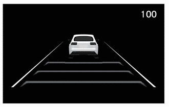 |
Illuminates (Green) |
|
Stop Retention Control |
|
Illuminates (Green) |
|
|
Waiting |
|||
|
Start Control |
|
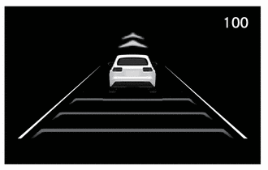 |
Illuminates (Green) |
|
Operate +RES or Accelerator Pedal to Resume |
|||
|
The vehicle is accelerating with the accelerator pedal depressed. |
|
 |
Illuminates (Green) |
|
Early Merging Vehicle |
|
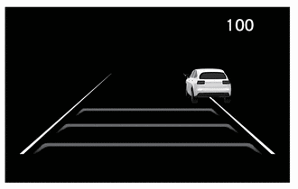 |
Illuminates (Green) |
|
The preceding vehicle changes out of the lane. |
|
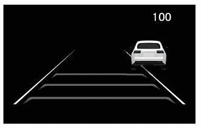 |
Illuminates (Green) |
Cruise Control Mode
|
Condition |
Multi-information Display* |
Indicator |
|
|---|---|---|---|
| *: These illustrations are examples. | |||
|
Being Controlled |
While driving at a set speed of 100 km/h (62 mph) (Green). |
Illuminates (Green) |
|